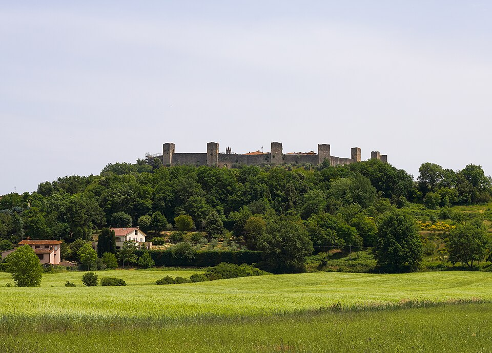
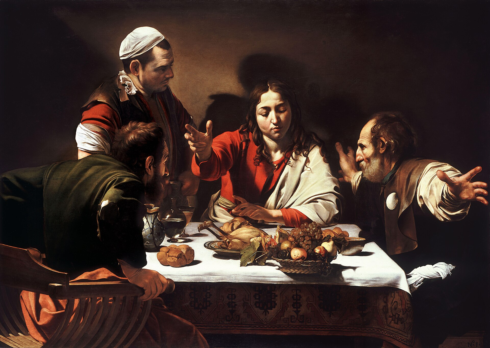

Terrain: rolling Val d'Elsa hills, vineyard and woodland, strade bianche, past Colle di Val d'Elsa and the walled crown of Monteriggioni, then the climb into Siena. Distance and ascent are measured from the day's GPS track.8
You do not ride this road alone, and that is not incidental to it. Today the companion beside you is the lesson. Charity is what turns two people going the same way into a pilgrimage.
“This is my commandment, that you love one another as I have loved you. Greater love has no man than this, that a man lay down his life for his friends. You are my friends if you do what I command you. No longer do I call you servants, for the servant does not know what his master is doing; but I have called you friends, for all that I have heard from my Father I have made known to you. You did not choose me, but I chose you… This I command you, to love one another.”
John 15:12–17, abridged · Revised Standard Version, Catholic Edition1
Today the road is generous: long green waves of the Val d'Elsa, woodland and vineyard, the white roads rising and falling, and at the end of it Siena on its three hills. It is a companionable country, made for two wheels turning at the same pace, for the small economy of the road — one waits at the top of the climb, the other closes the gap; one carries the map, the other the water. None of it is dramatic. All of it is charity in miniature.
Jesus, in the upper room, redraws the whole relationship in a single word. No longer do I call you servants… but I have called you friends. The distance that had defined every relationship with God — master and servant, Lord and subject — is abolished from his side. A servant obeys without being told why; a friend is let into the secret. “All that I have heard from my Father I have made known to you.” This is what love does: it stops managing the other from a safe height and lets him in.
And it is costly. The measure Jesus gives is not sentiment but the cross: greater love has no man than this, that a man lay down his life for his friends. Companionship on a hard road is a small school for exactly that — the daily, unspectacular laying-down of your own pace, your own preference, your own last word, for the sake of the person riding beside you. A father learns it for a son; a son, in time, learns it back.
Augustine, who grieved a friend so hard he could not bear the light, learned late where the love that does not die is kept. Love the friend, yes — but love him in God, who does not die; and even the enemy for God's sake. That is the difference between affection, which clutches, and charity, which sets free. Ride today as if the man beside you were being loved through you by Someone who will not let him go.
What last word, what preference, what pace of my own am I asked to lay down today — for the one riding beside me?
Today's route, San Gimignano to Siena. Map © CyclOSM / OpenStreetMap. Full elevation profile & all stages →
Down from the towers, the road runs south-east through the Elsa valley. Around the twenty-first kilometre it passes Colle di Val d'Elsa, a town in two parts — a lower, working town and, on its ridge, a compact medieval upper town worth the short pull up to it. Then woodland, and a climb, and one of the great sights of the road.

Photo: WikiRomaWiki (CC BY-SA 4.0) · Wikimedia CommonsFrom Monteriggioni it is the last pull into Siena — a city that will need a day of its own to begin to answer for itself, and gets one tomorrow. Tonight, only arrive: the brick streets climbing to the shell of the Campo, the black-and-white striped cathedral riding the skyline. Two rivals crowned this road in stone — Monteriggioni and San Gimignano, towers against towers. You end among them, having spent the day learning the opposite art.
That very day two of them were going to a village named Emmaus… and talking with each other about all these things that had happened. While they were talking and discussing together, Jesus himself drew near and went with them. But their eyes were kept from recognizing him… When he was at table with them, he took the bread and blessed, and broke it, and gave it to them. And their eyes were opened and they recognized him… They said to each other, “Did not our hearts burn within us while he talked to us on the road?”
Luke 24:13–32, abridged · Revised Standard Version, Catholic Edition2

Of all the resurrection stories, this is the one for cyclists. It happens on a road, over about seven miles — a short stage — between two people walking and talking through their grief. They are going the wrong way, out of Jerusalem, away from the place where everything had ended. And a third joins them, unrecognised, and simply walks at their pace and asks what they are discussing. He does not announce himself. He lets them talk.
Notice how the companionship works before the recognition comes. First he walks; then he listens; then, on the road, he opens the Scriptures to them — and only much later, at the table, in the ordinary act of breaking bread, do their eyes open and they know him. And when they try afterward to name the moment it began, they do not point to the table. They point to the road: did not our hearts burn within us while he talked to us on the way? The recognition happened at supper. The kindling happened on the road.
This is the promise hidden in every shared journey. You will not always know, in the moment, that you are not two but three. The companion beside you and the Companion who is never named ride at the same pace, in the same weather, and it is often only afterward — unpacking the day, breaking bread at evening — that you realise your hearts had been burning all along. Do not wait for the drama. Walk, listen, let the other talk. The recognition will come, and it will come at a table.
Just as there is an evil zeal of bitterness which separates from God and leads to hell, so there is a good zeal which separates from vices and leads to God and to life everlasting… Let them most patiently endure one another's infirmities, whether of body or of character… Let no one follow what he considers useful for himself, but rather what benefits another… Let them prefer nothing whatever to Christ, and may He bring us all together to life everlasting.
Rule of St Benedict, ch. 72, “The Good Zeal of Monks” · trans. Leonard J. Doyle OSB4
Benedict spends seventy-one chapters building a house — the hours, the work, the food, the punishments, the tools of the trade — and then, in the second-to-last chapter, he tells you what it was all for. It was for this: a good zeal. He is careful, because the word cuts both ways. There is a zeal that burns cold, the bitterness that has to be right, that keeps the ledger, that separates people from God. And there is a zeal that burns warm, that competes only in honour and patience, that prefers another's good to its own. A community — two monks or two pilgrims — is simply people close enough together that one zeal or the other will out.
Read his little rule of life for it slowly, because it is the whole art of companionship on a hard road. Most patiently endure one another's infirmities, whether of body or of character. Not just the body's infirmities — the slow morning, the sore knee — but the character's: the moods, the stubbornness, the thing about the other that you already know will be there again tomorrow at kilometre thirty. Charity is not the absence of that friction. It is what you do with it. Let no one follow what he considers useful for himself, but rather what benefits another.
And then the hinge of the whole thing, which keeps charity from collapsing into mere niceness: let them prefer nothing whatever to Christ. The love between the two of you is not the point; it is a road, like this one, and it leads somewhere. The father does not finally belong to the son, nor the son to the father; both belong to the One who is bringing them, as Benedict says, all together to life everlasting. That is why he ends not with “you” but with “us” — may He bring us all together. The road does not end in each other. It ends in the city where the burning of the heart is finally explained.
Every quotation is reproduced from the edition named; historical statements are drawn from the references below.